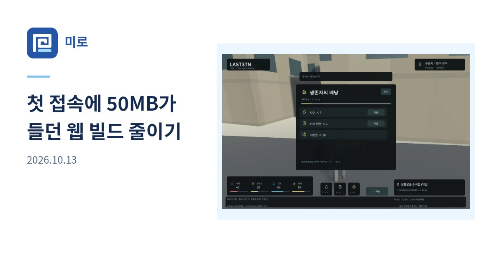

Tracefolio REPORTS & ISSUES
Tracefolio REPORTS & ISSUES게시글과 함께 자동 생성되는 MIRO OG 카드
검증 대기블로그 빌드가 홈과 글의 공유 이미지를 자동 생성하고 제목, 발행일, 썸네일 변경을 카드에 반영합니다.
작업 결과
게시글만 발행·수정하면 CI가 공유 카드를 다시 만들고 배포합니다. 글별 이미지 파일을 별도로 생성하거나 올릴 필요가 없습니다.
변경 내용
적용 내용
공개 홈 OG
공개 게시글 OG

build.mjs가 현재 원고와 커버를 social-card.mjs로 전달합니다. JPEG 바이트의 해시를 이미지 URL에 포함하므로 카드 내용이 바뀌면 새 URL이 생성됩니다. 썸네일이 없는 원고는 제목 중심 카드로 표시하고, 발행일 미확인 원고에는 날짜를 넣지 않습니다.
const image = await renderSocialCard({title:post.title,date,thumbnail});
saveSocialCard(post.href,post.href.split('/')[2],post.title,image);
공개용 대화 요약
- 사용자: 발행과 수정에 따라 OG가 자동으로 갱신되어야 한다고 정정했습니다.
- AI: Affinity 일괄 출력 방식에 새 글마다 재출력 단계가 생긴다는 점을 먼저 설명하지 못했다고 밝혔고, 정적 카드 배포를 중단했습니다.
- 사용자 원문: “자동 생성 방식으로 가야지”
- AI: 빌드 렌더러로 교체하고 실제 원고 추가·변경과 배포를 확인했습니다.
검증
정상 빌드에서 홈과 게시글의 OG 링크 155개를 대조했습니다. 임시 원고에 썸네일을 넣지 않아도 이미지가 생성됐으며, 기존 글 제목을 수정하면 이미지 URL이 바뀌는 것을 확인했습니다. 임시 원고를 제거한 다음 정상 빌드와 사이트 검사를 통과했습니다. 첫 GitHub Actions 배포는 Linux에서 글꼴을 자동으로 찾지 못해 실패했고, 공식 Noto Sans KR 파일을 해시로 고정하고 렌더러에 직접 등록한 수정본을 재배포했습니다. 수정 커밋 4533480의 Publish blog 실행 42801620127이 성공했습니다. 19:44:40 KST에 공개 홈페이지와 게시글의 실제 og:image URL에서 JPEG HTTP 200 응답을 확인했습니다.
남은 사항
블로그 발행 과정에 별도 작업은 없습니다. 프로젝트 지침을 빌드 자동 생성 기준으로 갱신했습니다.
작업 시간
- 제안 시간: 구현·검증 3~5분, 자동 배포 별도
- 실제로 완료된 시간: 19:36:58 KST 시작, 19:41:13 KST 최초 푸시, 19:43:57 KST 글꼴 수정 푸시, 19:44:40 KST 공개 검증 완료. 총 약 7분 43초.
- XERJ: 미사용 — 코드 검색 근거가 제공되지 않았습니다.